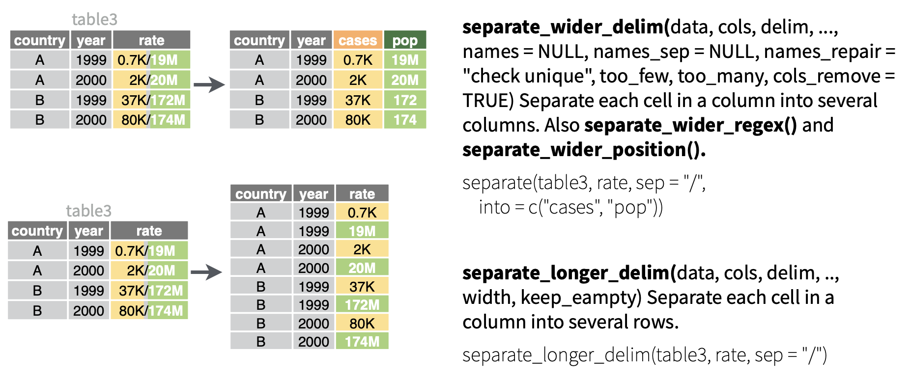

基于stringr的字符串处理

本章主要介绍基于 stringr 包的字符串和字符向量的处理。我们需要记住 stringr 中用于字符串处理的函数大多都以 str_ 开头，这样我们在 RStudio 通过键入 str_ 就能方便的浏览并选择我们需要的函数：

和字符处理密切相关的一个内容是正则表达式（regular expressions），由于这一部分内容较多，我们将在下一章介绍。
1 加载包
本章用到的案例数据集“babynames”记录了美国婴儿的姓名分布数据。
babynames# A tibble: 1,924,665 × 5
year sex name n prop
<dbl> <chr> <chr> <int> <dbl>
1 1880 F Mary 7065 0.0724
2 1880 F Anna 2604 0.0267
3 1880 F Emma 2003 0.0205
4 1880 F Elizabeth 1939 0.0199
5 1880 F Minnie 1746 0.0179
6 1880 F Margaret 1578 0.0162
7 1880 F Ida 1472 0.0151
8 1880 F Alice 1414 0.0145
9 1880 F Bertha 1320 0.0135
10 1880 F Sarah 1288 0.0132
# ℹ 1,924,655 more rows2 查找字符
下面是 stringr 包中用于查找字符的函数，它们接受字符向量输入，常常和正则表达式配合使用：

2.1 str_dect() 和 str_starts()
str_dect(string, pattern) 查找 string 中是否有包含目标字符 pattern 的对象，返回一个逻辑向量。str_starts(string, pattern) 查找 string 中是否有开头为目标字符 pattern 的对象。
names <- babynames$name[1:10]
names [1] "Mary" "Anna" "Emma" "Elizabeth" "Minnie" "Margaret"
[7] "Ida" "Alice" "Bertha" "Sarah" # 查找“names”中是否有以“M”开头的对象
str_detect(names, "^M") [1] TRUE FALSE FALSE FALSE TRUE TRUE FALSE FALSE FALSE FALSE# 也可以用str_starts()
str_starts(names, "M") [1] TRUE FALSE FALSE FALSE TRUE TRUE FALSE FALSE FALSE FALSE【练习】统计每年有多少名婴儿的名字中包含了“x”，并用折线图可视化这些婴儿每年的占比情况：
2.2 str_which()
str_which(string, pattern) 查找 string 中是否有包含目标字符 pattern 的对象，返回匹配到的对象的位置。
str_which(names, "^M")[1] 1 5 6stringr 包的字符查找函数中的 pattern 是要区分大小写的，也意味着这些函数在查找时会区分大小写。
上述函数都可以添加一个 negate = TRUE 参数，表示查找没有包含目标字符的对象，如：
str_detect(names, "^M", negate = TRUE) [1] FALSE TRUE TRUE TRUE FALSE FALSE TRUE TRUE TRUE TRUEstr_which(names, "^M", negate = TRUE)[1] 2 3 4 7 8 9 10
2.3 str_view()

str_view(string, pattern) 是一个比较特殊的字符查找函数，它返回的结果以HTML渲染样式来返回 string 中所有匹配的字符，并且会将其中的 pattern 以“<>”标记出来：
str_view(names, "^M")[1] │ <M>ary
[5] │ <M>innie
[6] │ <M>argaretbase 包中的字符查找函数
2.3.1 %in%
查找字符向量中是否有任何目标字符串。它会把每个字符串当成判断的最小单位，即完全匹配，所以不能用来判断/查找”长字符串中是否含有特定的短字符串”。例如：
2.3.2 grep()函数
grep 的全称是“global search regular expression and print out the line”，类似于 stringr 包中的 str_which() ，返回匹配到的目标字符的位置。当添加了 value = TRUE 参数时，类似于 str_subset() 函数（见下文），返回包含目标字符的所有对象。
grep(
pattern = "^M", # 需要找找的字符
x = names, # 从哪里查找
ignore.case = F, # 是否忽略大小写，默认为FALSE
value = F, # 默认为FALSE，表示返回匹配到的字符所在的位置；TRUE则返回查找到的值
invert = F # 如果为TRUE，则返回未匹配到的字符的值或位置
) [1] 1 5 6
2.3.3 grepl()
grepl() 类似于 stringr 包中的 str_detect() ，返回是否匹配到目标字符的逻辑向量：
grepl(
pattern = "^M",
x = names
) [1] TRUE FALSE FALSE FALSE TRUE TRUE FALSE FALSE FALSE FALSE3 截取字符

3.1 str_sub()
str_sub(string，start，end) 用于提取指定长度和位置的字符串，其中 start 和 end 是截取字符串应该开始和结束的位置。返回的字符串的长度 = end - start + 1。base 包中与之对应的函数是 substr() 。
3.2 str_subset()
str_subset(string, pattern) 返回 string 中包含 pattern 的所有对象。功能类似于添加了 value = TRUE 参数时的 grep() 函数。
# 返回“names”中开头为“M”的对象
str_subset(names, "^M")[1] "Mary" "Minnie" "Margaret"4 替换字符

4.1 str_sub() <- value
用 str_sub() <- value 可以实现对特定位置字符的替换。例如将“fruit_list”中的第1-3位字符替换成“***”：
str_sub(fruit_list, 1, 3) <- "***"
fruit_list[1] "*** ple" "***nana" "***r" NA
4.2 str_replace()
str_replace(string, pattern, replacement)将string中的第一个pattern替换成replacement。str_replace_all(string, pattern, replacement)将string中的所有pattern替换成replacement。
fruit_list <- c("A_p p le", " B anana", "Pear ", NA)
# 将“fruit_list”中的第一个空格替换成“#”
str_replace(fruit_list, pattern = " ", replacement = "#")[1] "A_p#p le" "#B anana" "Pear#" NA # 将“fruit_list”中的所有空格替换成“#”
str_replace_all(fruit_list, pattern = " ", replacement = "#")[1] "A_p#p#le" "#B#anana" "Pear#" NA
4.3 str_remove()
str_remove(string, pattern)将string中的第一个pattern删除。str_remove_all(string, pattern)将string中的所有pattern删除。
# 删除“fruit_list”中的第一个空格
str_remove(fruit_list, pattern = " ")[1] "A_pp le" "B anana" "Pear" NA # 删除“fruit_list”中的所有空格
str_remove_all(fruit_list, pattern = " ")[1] "A_pple" "Banana" "Pear" NA 在 base 包中与 str_replace_all() 和 str_remove_all() 对应的函数是 gsub() ：
gsub(x = fruit_list, pattern = " ", replacement = "#")[1] "A_p#p#le" "#B#anana" "Pear#" NA 4.4 转换大小写

str_to_upper(c("abc", "def"))[1] "ABC" "DEF"str_to_lower(c("ABC", "DEF"))[1] "abc" "def"str_to_title(c("ABC", "DEF"))[1] "Abc" "Def"5 拼接字符

5.1 str_c()
str_c() 和 str_glue() 用于拼接字符。str_c() 与 base 包的 paste0() 的用法非常相似，但前者遵循 tidyverse 规则，不会对缺失值进行处理，能够更好的与 mutate() 配合使用：
df <- tibble(name = c("Flora", "David", "Terra", NA, "Eric", NA))
df %>% mutate(greeting = str_c("Hi ", name, "!"))# A tibble: 6 × 2
name greeting
<chr> <chr>
1 Flora Hi Flora!
2 David Hi David!
3 Terra Hi Terra!
4 <NA> <NA>
5 Eric Hi Eric!
6 <NA> <NA> # A tibble: 6 × 2
name greeting
<chr> <chr>
1 Flora Hi Flora!
2 David Hi David!
3 Terra Hi Terra!
4 <NA> Hi NA!
5 Eric Hi Eric!
6 <NA> Hi NA! 如果希望在遇到缺失值时以其他字符替换显示，可以使用 coalesce(x, "y") ，它会将x中的所有缺失值替换成“y”。根据需要，可以在 str_c() 内部或外部使用它：
# 演示coalesc()的作用
coalesce(df$name, "you")[1] "Flora" "David" "Terra" "you" "Eric" "you" df |>
mutate(
greeting1 = str_c("Hi ", coalesce(name, "you"), "!"),
greeting2 = coalesce(str_c("Hi ", name, "!"), "Hi someone!"),
.keep = "used"
)# A tibble: 6 × 3
name greeting1 greeting2
<chr> <chr> <chr>
1 Flora Hi Flora! Hi Flora!
2 David Hi David! Hi David!
3 Terra Hi Terra! Hi Terra!
4 <NA> Hi you! Hi someone!
5 Eric Hi Eric! Hi Eric!
6 <NA> Hi you! Hi someone!可以通过添加 sep 参数，以固定的分隔符分隔多个字符向量，类似于 paste() 中的 sep 参数（两者对待缺失值的行为不一样）：
df <- df %>%
mutate(
age = c(11, 16, 20, 18, NA, 22),
height = c(116, 170, NA, 180, NA, 177)
)
df %>%
mutate(
combine = str_c(coalesce(name, "unknown"), age, height, sep = "-")
)# A tibble: 6 × 4
name age height combine
<chr> <dbl> <dbl> <chr>
1 Flora 11 116 Flora-11-116
2 David 16 170 David-16-170
3 Terra 20 NA <NA>
4 <NA> 18 180 unknown-18-180
5 Eric NA NA <NA>
6 <NA> 22 177 unknown-22-177# 用paste()替换str_c()
df %>%
mutate(
combine = paste(coalesce(name, "unknown"), age, height, sep = "-")
)# A tibble: 6 × 4
name age height combine
<chr> <dbl> <dbl> <chr>
1 Flora 11 116 Flora-11-116
2 David 16 170 David-16-170
3 Terra 20 NA Terra-20-NA
4 <NA> 18 180 unknown-18-180
5 Eric NA NA Eric-NA-NA
6 <NA> 22 177 unknown-22-177如果给 str_c() 只提供了一个字符向量，这个时候如果需要将该向量内的字符以固定的分隔符合并为一个字符，则需要指定 collapse 参数。这种情况可以和 summarize() 配合使用，并且一般会使用另一个字符连接函数 str_flatten() （见）。
5.2 str_glue() 和 str_glu_data()
如果你需要将很多字符串向量和多个固定字符粘贴起来，如果这时候仍然用 str_c() 会让代码看上去比较混乱和难以理解。这种情况我们可以使用 str_glue() 来简化代码。 str_glue() 将需要调用的字符向量放到“{}”内，括号外可以输入任意自定义字符。
df %>%
mutate(
greeting = str_glue(
"My name is {name}, ",
"my age is {age}, ",
"my height is {height/100} meters.",
.na = "**"
)
)# A tibble: 6 × 4
name age height greeting
<chr> <dbl> <dbl> <glue>
1 Flora 11 116 My name is Flora, my age is 11, my height is 1.16 meters.
2 David 16 170 My name is David, my age is 16, my height is 1.7 meters.
3 Terra 20 NA My name is Terra, my age is 20, my height is ** meters.
4 <NA> 18 180 My name is **, my age is 18, my height is 1.8 meters.
5 Eric NA NA My name is Eric, my age is **, my height is ** meters.
6 <NA> 22 177 My name is **, my age is 22, my height is 1.77 meters. str_glue() 默认情况下会将缺失值转换为字符串 “NA”，这一点与 str_c() 不一致。可以通过添加 .na 参数指定将缺失值替换成什么。
5.2.1 str_glue_data()
如果你想脱离 mutate()，在一个表格中简单的通过连接几列来返回一个字符向量，那么用 str_glue_data() 可能更合适。其语法为：str_glue_data(.x, ..., .sep, .na = "NA") 。
cars <- head(mtcars)
cars mpg cyl disp hp drat wt qsec vs am gear carb
Mazda RX4 21.0 6 160 110 3.90 2.620 16.46 0 1 4 4
Mazda RX4 Wag 21.0 6 160 110 3.90 2.875 17.02 0 1 4 4
Datsun 710 22.8 4 108 93 3.85 2.320 18.61 1 1 4 1
Hornet 4 Drive 21.4 6 258 110 3.08 3.215 19.44 1 0 3 1
Hornet Sportabout 18.7 8 360 175 3.15 3.440 17.02 0 0 3 2
Valiant 18.1 6 225 105 2.76 3.460 20.22 1 0 3 1str_glue_data(cars, "{rownames(cars)} has {hp} hp")Mazda RX4 has 110 hp
Mazda RX4 Wag has 110 hp
Datsun 710 has 93 hp
Hornet 4 Drive has 110 hp
Hornet Sportabout has 175 hp
Valiant has 105 hp# 在mutate()外使用str_glue()实现同样的目的需要反复调用数据集名称
str_glue("{rownames(cars)} has {cars$hp} hp") Mazda RX4 has 110 hp
Mazda RX4 Wag has 110 hp
Datsun 710 has 93 hp
Hornet 4 Drive has 110 hp
Hornet Sportabout has 175 hp
Valiant has 105 hp
5.3 str_flatten()
str_c() 和 str_glue() 可以很好地与 mutate() 配合使用，因为它们的输出与输入长度相同。如果想要一个能与 summarize() 完美配合的函数，即总是返回单个字符串的函数，就可以用 str_flatten() ：它接收单个字符向量，并以固定的分隔符将向量中的每个元素合并为一个字符。
str_flatten(c("x", "y", "z"), collapse = ", ", last = ", and ")[1] "x, y, and z"例如，统计每个人喜欢的水果，把每个人喜欢的水果用逗号连接起来：
df <- tribble(
~ name, ~ fruit,
"Carmen", "banana",
"Carmen", "apple",
"Marvin", "nectarine",
"Terence", "cantaloupe",
"Terence", "papaya",
"Terence", "mandarin"
)
df |>
group_by(name) |>
summarize(fruits = str_flatten(fruit, collapse = ", "))# A tibble: 3 × 2
name fruits
<chr> <chr>
1 Carmen banana, apple
2 Marvin nectarine
3 Terence cantaloupe, papaya, mandarin# 也可以用str_c()并指定collapse参数
df |>
group_by(name) |>
summarize(fruits = str_c(fruit, collapse = ", "))# A tibble: 3 × 2
name fruits
<chr> <chr>
1 Carmen banana, apple
2 Marvin nectarine
3 Terence cantaloupe, papaya, mandarin6 分割字符

str_split(string, pattern, simplify, i) 可以根据某个分割符将字符向量中的每一个对象分割成n列。其中：
string：待分割的字符向量。其中每个对象包含的分割符数量可以是不同的。pattern：指定分割符。simplify：默认“FALSE”，返回一个字符向量列表。设置为“TRUE”时（常用），则返回字符矩阵（character matrix）。
可以在 str_split() 外通过添加 [x, y] 来提取拆分后的指定列或行的字符。
df <- tibble(
fruits = c(
"apples-oranges-pears-bananas",
"pineapples-mangos-guavas"
)
)
str_split(df$fruits, "-", simplify = T) [,1] [,2] [,3] [,4]
[1,] "apples" "oranges" "pears" "bananas"
[2,] "pineapples" "mangos" "guavas" "" str_split(df$fruits, "-", simplify = T)[,2] [1] "oranges" "mangos" # A tibble: 2 × 2
fruits `2nd_fruit`
<chr> <chr>
1 apples-oranges-pears-bananas oranges
2 pineapples-mangos-guavas mangos 6.1 字符列的分割

separate_wider_position() 、 separate_wider_delim() 以及 separate_wider_regex() 用于将某一列根据分割符（separate_wider_delim()）、固定宽度（separate_wider_position()）或正则表达式（separate_wider_regex()）拆分为多列。这些函数包括在 tidyr 包中，因为它们的操作对象是数据框（列），而不是单个字符向量。把这些函数中的“wider”替换成“longer”就构成了另外三个类似函数，用于将某一列根据分割符、固定宽度或正则表达式拆分为多行（不常用）。
6.1.1 separate_wider_delim()
将数据框中的某列根据某个符号（delim）拆分成几列：
df3 |>
separate_wider_delim(
x,
delim = "-",
names = c("code", "edition", "year"),
cols_remove = F # 不要移除原始列
)# A tibble: 3 × 4
code edition year x
<chr> <chr> <chr> <chr>
1 a10 1 2022 a10-1-2022
2 b10 2 2011 b10-2-2011
3 e15 1 2015 e15-1-2015str_split() 也可以实现？
如果用上面的 str_split() 实现同样目的的话需要如下代码：
df3 %>%
mutate(
code = str_split(x, pattern = "-", simplify = T)[,1],
edition = str_split(x, pattern = "-", simplify = T)[,2],
year = str_split(x, pattern = "-", simplify = T)[,3]
)# A tibble: 3 × 4
x code edition year
<chr> <chr> <chr> <chr>
1 a10-1-2022 a10 1 2022
2 b10-2-2011 b10 2 2011
3 e15-1-2015 e15 1 2015 如果拆分后某几列的数据不需要，可以将其指定为“NA”，这样在输出结果中指定为“NA”的列将不会显示：
df3 |>
separate_wider_delim(
x,
delim = "-",
names = c("code", NA, "year")
)# A tibble: 3 × 2
code year
<chr> <chr>
1 a10 2022
2 b10 2011
3 e15 2015 在上面的 Table 1 中，待分割列有固定的分隔符分隔我们想要提取的变量，这种情况用 separate_wider_delim() 可以便捷的分割这些变量。但是在下面的 Table 2 中待分割列中的变量间由不同的分隔符分隔，这个时候我们可以通过正则表达式来定义分隔符。delim 参数支持通过 regex() 包装的正则表达式：
df4 |>
separate_wider_delim(
x,
delim = regex("-|_|\\s"), # 或者写成 "-|_| "
names = c("code", "edition", "year", "month"),
cols_remove = F
)# A tibble: 3 × 5
code edition year month x
<chr> <chr> <chr> <chr> <chr>
1 a10 1 2022 January a10-1_2022 January
2 b10 2 2011 February b10-2_2011 February
3 e15 1 2015 March e15-1_2015 March
6.1.2 separate_wider_regex()
根据正则表达式拆分列：
df_age <- tribble(
~str,
"<Sheryl>-F_34",
"<Kisha>-F_45",
"<Brandon>-N_33",
"<Sharon>-F_38",
"<Penny>-F_58",
"<Justin>-M_41",
"<Patricia>-F_84",
)
# 给予赋值的对象会被写入新列，其他字符会被删除
df_age |>
separate_wider_regex(
str,
patterns = c(
"<",
name = ".+",
">-",
gender = ".",
"_",
age = ".+"
)
)# A tibble: 7 × 3
name gender age
<chr> <chr> <chr>
1 Sheryl F 34
2 Kisha F 45
3 Brandon N 33
4 Sharon F 38
5 Penny F 58
6 Justin M 41
7 Patricia F 84
6.1.3 separate_wider_position()
拆分指定长度的字符构成新列：
df4 <- tibble(x = c("202215TX", "202122LA", "202325CA"))
df4 |>
separate_wider_position(
x,
widths = c(year = 4, age = 2, state = 2)
)# A tibble: 3 × 3
year age state
<chr> <chr> <chr>
1 2022 15 TX
2 2021 22 LA
3 2023 25 CA 将tibble中的某个字符列根据某个符号（delim）拆分成几行：
# A tibble: 3 × 1
x
<chr>
1 a,b,c
2 d,e
3 f df1 |>
separate_longer_delim(x, delim = ",")# A tibble: 6 × 1
x
<chr>
1 a
2 b
3 c
4 d
5 e
6 f 6.1.4 拆分错误调试
在使用 separate_wider_delim() 时，如果需要拆分的字符串中某些字符根据指定分割符拆封后片段数不足，则会发生报错：
df |>
separate_wider_delim(
x,
delim = "-",
names = c("x", "y", "z")
)Error in `separate_wider_delim()`:
! Expected 3 pieces in each element of `x`.
! 2 values were too short.
ℹ Use `too_few = "debug"` to diagnose the problem.
ℹ Use `too_few = "align_start"/"align_end"` to silence this message.
Run `rlang::last_trace()` to see where the error occurred.对于这种情况，可以手动检查数据问题，但是在实际应用中需要转换的字符列可能非常长，我们难以知道到底在哪一行出现了问题。这个时候，我们可以按照错误提示所说的那样，通过添加 too_few = "debug" 参数来进入调试模式：
debug <- df |>
separate_wider_delim(
x,
delim = "-",
names = c("x", "y", "z"),
too_few = "debug"
)
debug# A tibble: 5 × 6
x y z x_ok x_pieces x_remainder
<chr> <chr> <chr> <lgl> <int> <chr>
1 1-1-1 1 1 TRUE 3 ""
2 1-1-2 1 2 TRUE 3 ""
3 1-3 3 <NA> FALSE 2 ""
4 1-3-2 3 2 TRUE 3 ""
5 1 <NA> <NA> FALSE 1 "" 使用调试模式时，输出的结果会多出三列：“x_ok”、“x_pieces” 和 “x_remainder”（前缀“x”是输入的变量名）：
“x_ok”列：“TRUE”代表这一行能够被成功分割；而“FALSE”代表这一行分割失败。
“x_pieces”列：告诉我们这一行能够被分割成多少片段。
“x_remainder”列：在指定了
too_many参数时有用。它告诉我们每一行多出来的具体字符（见下文）。
因此，利用“x_ok”我们可以方便的找出转换失败的行：
debug |> filter(!x_ok)# A tibble: 2 × 6
x y z x_ok x_pieces x_remainder
<chr> <chr> <chr> <lgl> <int> <chr>
1 1-3 3 <NA> FALSE 2 ""
2 1 <NA> <NA> FALSE 1 "" 在发现了这些错误之处后，可以在原始数据中修复这些问题，然后重新运行 separate_wider_delim() ，并确保删除 too_few = "debug"。
在其他情况下，我们可能想用 “NA” 填补缺失的部分。这就是 too_few = "align_start" 和 too_few = "align_end" 的作用，它们可以控制 “NA” 填充的位置（一般用 "align_start"）：
df |>
separate_wider_delim(
x,
delim = "-",
names = c("x", "y", "z"),
too_few = "align_start"
)# A tibble: 5 × 3
x y z
<chr> <chr> <chr>
1 1 1 1
2 1 1 2
3 1 3 <NA>
4 1 3 2
5 1 <NA> <NA> 在上面这个案例中我们指定了 too_few 参数，它告诉程序如何处理分割后片段数少于 name 中所定义的新列数的情况，是debug还是用“NA”填充。另一种情况是指定 too_many 参数，它告诉程序如何处理分割后片段数超出 name 中所定义的新列数的情况，是debug（too_many = "debug"）、舍弃（too_many = "drop"），还是合并（too_many = "merge"）多出来的片段。下面是一个案例：
df <- tibble(x = c("1-1-1", "1-1-2", "1-3-5-6", "1-3-2", "1-3-5-7-9"))
debug <- df |>
separate_wider_delim(
x,
delim = "-",
names = c("x", "y", "z"),
too_many = "debug"
)
debug# A tibble: 5 × 6
x y z x_ok x_pieces x_remainder
<chr> <chr> <chr> <lgl> <int> <chr>
1 1-1-1 1 1 TRUE 3 ""
2 1-1-2 1 2 TRUE 3 ""
3 1-3-5-6 3 5 FALSE 4 "-6"
4 1-3-2 3 2 TRUE 3 ""
5 1-3-5-7-9 3 5 FALSE 5 "-7-9" 我们同样可以通过“x_ok”列寻找转换失败的行。在定义 too_many 的情况下，“x_remainder”就会发挥它的作用，这一列告诉我们每一行超出来的具体字符。
接下来我们可以决定如何处理超出来的片段：
# 删除超出的片段
df |>
separate_wider_delim(
x,
delim = "-",
names = c("x", "y", "z"),
too_many = "drop"
)# A tibble: 5 × 3
x y z
<chr> <chr> <chr>
1 1 1 1
2 1 1 2
3 1 3 5
4 1 3 2
5 1 3 5 # 合并超出的片段
df |>
separate_wider_delim(
x,
delim = "-",
names = c("x", "y", "z"),
too_many = "merge"
)# A tibble: 5 × 3
x y z
<chr> <chr> <chr>
1 1 1 1
2 1 1 2
3 1 3 5-6
4 1 3 2
5 1 3 5-7-97 计算字符长度

str_length() 可以返回字符串中每一个字符的长度（空格算一个字符）：
str_length(c("a", "R for data science", NA))[1] 1 18 NA下面我们用“babynames”数据集，来演示如何利用 str_length() + count()，来统计婴儿名字长度的分布情况，然后使用 Filter() 来查看最长的名字：
babynames# A tibble: 1,924,665 × 5
year sex name n prop
<dbl> <chr> <chr> <int> <dbl>
1 1880 F Mary 7065 0.0724
2 1880 F Anna 2604 0.0267
3 1880 F Emma 2003 0.0205
4 1880 F Elizabeth 1939 0.0199
5 1880 F Minnie 1746 0.0179
6 1880 F Margaret 1578 0.0162
7 1880 F Ida 1472 0.0151
8 1880 F Alice 1414 0.0145
9 1880 F Bertha 1320 0.0135
10 1880 F Sarah 1288 0.0132
# ℹ 1,924,655 more rowsbabynames |>
count(length = str_length(name), wt = n)# A tibble: 14 × 2
length n
<int> <int>
1 2 338150
2 3 8589596
3 4 48506739
4 5 87011607
5 6 90749404
6 7 72120767
7 8 25404066
8 9 11926551
9 10 1306159
10 11 2135827
11 12 16295
12 13 10845
13 14 3681
14 15 830如果不指定该参数，那么 count() 返回的计算结果将是各个长度的名字在该表格中的计数（行数），但是该表格不是一个婴儿一行，而是在 “n” 列中提供了每一个姓名下的婴儿总数，所以需要用这个数字来对计数进行加权。
# 和上表对比
babynames |>
count(length = str_length(name))# A tibble: 14 × 2
length n
<int> <int>
1 2 4660
2 3 41274
3 4 177838
4 5 404291
5 6 546519
6 7 424360
7 8 213803
8 9 78946
9 10 23437
10 11 6461
11 12 1610
12 13 946
13 14 390
14 15 130# 查看最长的名字
babynames |>
filter(str_length(name) == max(str_length(name))) |>
count(name, wt = n, sort = TRUE)# A tibble: 34 × 2
name n
<chr> <int>
1 Franciscojavier 123
2 Christopherjohn 118
3 Johnchristopher 118
4 Christopherjame 108
5 Christophermich 52
6 Ryanchristopher 45
7 Mariadelosangel 28
8 Jonathanmichael 25
9 Christianjoseph 22
10 Christopherjose 22
# ℹ 24 more rows